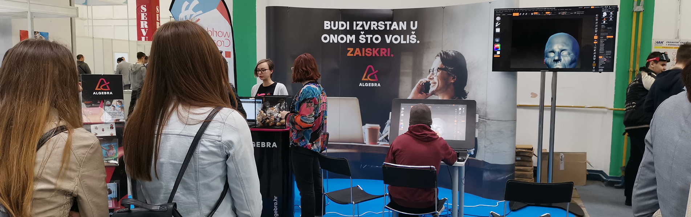

Student Josip Stanešić 12. je sistemaš svijeta i dobitnik medalje izvrsnosti.

Nakon godinu dana priprema za natjecanje WorldSkills Kazan 2019 na kojem je sudjelovalo 1300 natjecatelja iz cijelog svijeta, trud se itekako isplatio. Josip, student 3. godine preddiplomskog studija sistemskog inženjerstva osvojio je 12. mjesto u vještini IT Networks and System Administration te osvojio medalju izvrsnosti! Čestitke Josipu ali i njegovim/našim mentorima koji su ga pripremali za ovo natjecanje – voditelju studija sistemskog inženjerstva Silviju Papiću, voditelju katedre za operacijske sustave – Vedranu Dakiću i asistentu na studiju sistemskog inženjerstva – Jasminu Redžepagiću. Čestitke i našem studentu 3.godine preddiplomskog studija programskog inženjerstva Josipu Horvatu i mentoru voditelju katedre za programsko inženjerstvo - Goranu Đambiću na osvojenom 16.mjestu u vještini IT Software Solutions for Business.